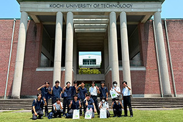
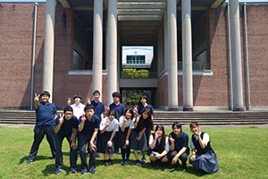

香川短期大学へ進んだ卒業生
情報コース卒業生の田中李旺さんは、香川短期大学の経営情報・デザイン学科へ進みました。高校で始めたIllustratorや3D制作を、キャラクター、ロゴ、Webページ、プログラミングへ広げています。
進路と卒業生
情報・ビジネス・デザインを横断し、2年間で専門性と実務力を伸ばす進路です。
情報コース卒業生の田中李旺さんは、香川短期大学の経営情報・デザイン学科へ進みました。高校で始めたIllustratorや3D制作を、キャラクター、ロゴ、Webページ、プログラミングへ広げています。
香川短期大学では、コンピュータと情報リテラシーに加え、経営、経済、簿記会計、秘書、観光、司書、医療事務などを組み合わせて学べます。情報を仕事で使う方向へ広げたい人の選択肢です。
デザインとアートを幅広く学び、アイデアを目に見える形へ変える技術を身につけます。高校で経験する画像処理、3D、Web、情報デザインを、作品制作や地域・企業との課題へ発展させられます。
修業年限、取りたい資格、制作とビジネスの比重、四年制大学への編入、卒業制作の内容を比べます。『情報もデザインも続けたい』場合に、学びを早く絞りすぎず進める道になります。
「短期大学への進学」では、作る、直す、調べる、支えるなど行動から考えます。
「短期大学への進学」では、学校名や会社名だけでなく、学ぶ内容を比べます。
「短期大学への進学」では、授業、設備、制作量、入試や採用方法を質問します。
「短期大学への進学」では、科目、資格、作品、活動を志望理由へまとめます。
「短期大学への進学」では、学科・専攻、授業、設備、制作課題まで比べます。
「短期大学への進学」では、似た名称でも、理論、開発、デザイン、資格の比重は進路先ごとに異なります。
「短期大学への進学」では、科目、資格、作品、見学の中から、さらに続けたい作業を整理します。
「短期大学への進学」では、職業名を先に決めず、作る、調べる、直す、支えるなど実際の行動から考えます。
「短期大学への進学」では、大学・短大・専門学校の見学では、授業時間と制作量を質問します。
「短期大学への進学」では、企業については、会社名だけでなく職種、配属、必要な技能を分けて調べます。
「短期大学への進学」に関わる成果は、完成物と自分が担当した過程を分けて整理します。
「短期大学への進学」では、興味を持ったきっかけ、続けた学習、進学後・就職後に行うことを一本につなげます。
「短期大学への進学」では、大学・短期大学・専門学校・就職を並べ、学費、期間、入試・採用方法、卒業後の仕事を確認します。
「短期大学への進学」では、第一希望以外も見ることで、自分が譲れない条件を明確にします。
「短期大学への進学」では、進路実績は学校名だけでなく、学部・学科・専攻と職種まで聞いてください。
「短期大学への進学」では、資格や作品を入試でどう生かしたか、準備を始めた学年も確かめられます。


